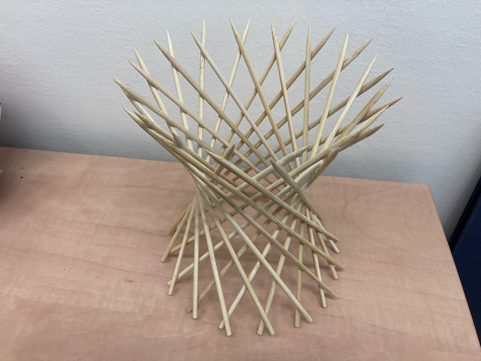
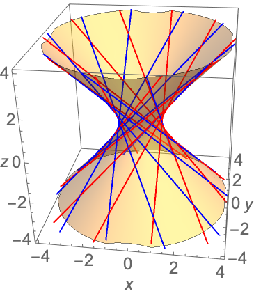
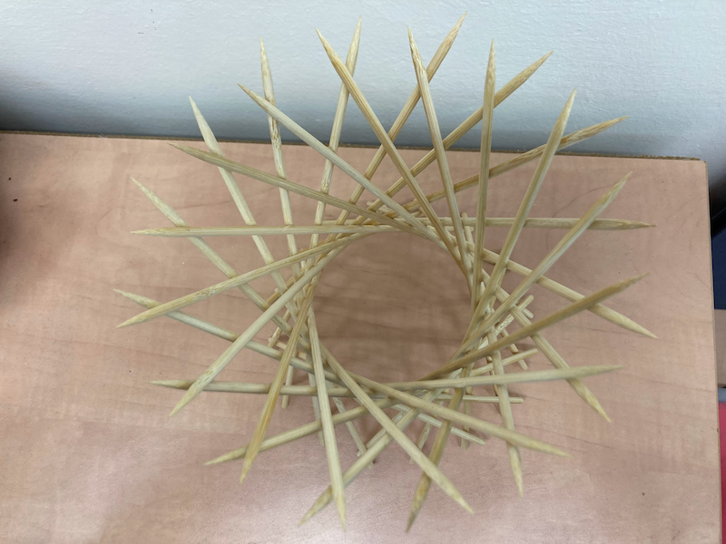

Skewer Hyperboloid

George Hart is again the hero of this project. Go check out his webpage to see how to build this beautiful shape. All you need to make the skewer hyperboloid is a bunch of skewers and thin elastic bands.
This is an easy project, and the end result is so fun to play with! It is surprising how smoothly this shape morphes when you pull and push the skewers to change the angle, it’s hard to explain, so you should definitely try it yourself 😁. See Annie Perkins’s video to get a better idea:
The one thing I can add to George Hart’s page is that after many weeks and months the elastic bands will dry out and break! I gave a skewer hyperboloid to a friend, and one day he arrived at his office and found out that the whole thing had disintegrated overnight, and the skewers were all over the place. I’m still looking for a suitable substitute to the elastic bands. It must be something flexible that enables us to play with the construction, and at the same time something durable… I have not found yet the perfect material, if you have a suggestion please write to me.
I wanted my hyperboloid to last for a long time, so after the construction was done, I used super glue to fix the skewers in a particular angle. Now I can’t play with it, but at least it will not disintegrate overnight in a few months time (hopefully!).

The mathematical name of this shape is “hyperboloid of one sheet”, and its equation is
\[ \begin{equation} \frac{x^2}{A^2} + \frac{y^2}{B^2} - \frac{z^2}{C^2} = 0. \end{equation} \]
When \(A=B\) the horizontal cross-sections are circles, just like in our construction. The elastic bands effectively allow us to play with the parameter \(C\), which controls how fast the hyperboloid grows sideways. There is a wonderful widget in the Interactive Gallery of Quadric Surfaces, its quite fun to play with.
To see how this curved surface can be made entirely out of straight lines, one can define the surface as the set of all parametric curves of the kind
\[ \begin{align} x &= A (\cos \theta - v \sin \theta)\\ y &= B (\sin \theta + v \cos \theta)\\ z &= C \varepsilon v. \end{align} \]
Substitute the parametric equations above into the equation of the paraboloid and see that they satisfy it.
There are actually two families of curves, for \(\epsilon=\pm 1\). I made a Mathematica plot of the two families of lines, in red (\(\varepsilon=1\)) and in blue (\(\varepsilon=-1\)), for ten \(\theta\) values between 0 and \(2\pi\). It’s easy to see that each family of lines swirls in a different direction.

The Mathematica code I wrote is
a = 1; b = 1; c = 1; h = 4; n = 10;
p1 = ContourPlot3D[ (*hyperboloid*)
x^2/a^2 + y^2/b^2 - z^2/c^2 == 1, {x, -h, h}, {y, -h, h}, {z, -h,
h},
Mesh -> None, ContourStyle -> Opacity[0.4], AxesLabel -> {x, y, z},
LabelStyle -> Large
];
p2 = ParametricPlot3D[ (*red lines*)
Table[{
a (Cos[theta] - v Sin[theta]),
b (Sin[theta] + v Cos[theta]),
c v
}, {theta, 0, 2 Pi, 2 Pi/n}],
{v, -20, 20}, PlotStyle -> {Red}
];
p3 = ParametricPlot3D[ (*blue lines*)
Table[{
a (Cos[theta] - v Sin[theta]),
b (Sin[theta] + v Cos[theta]),
- c v
}, {theta, 0, 2 Pi, 2 Pi/n}],
{v, -20, 20}, PlotStyle -> {Blue}
];
Show[{p1, p2, p3}]